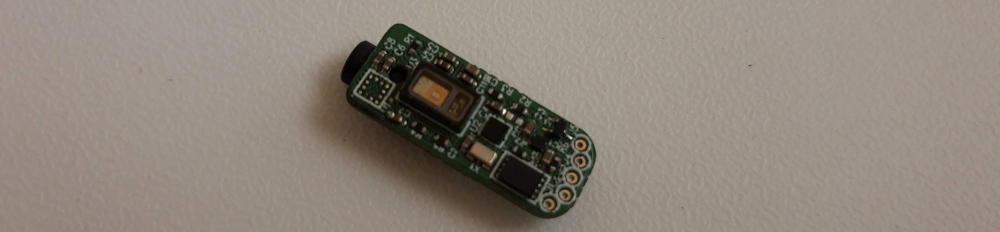
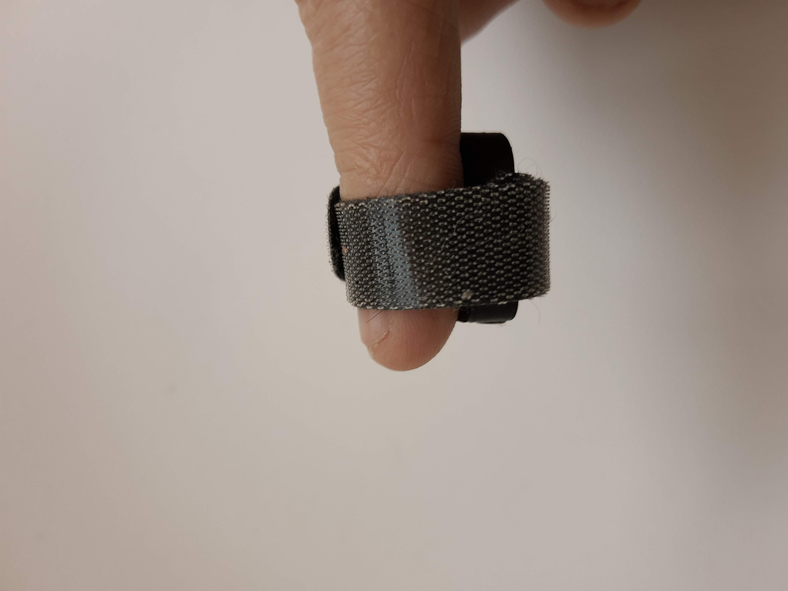
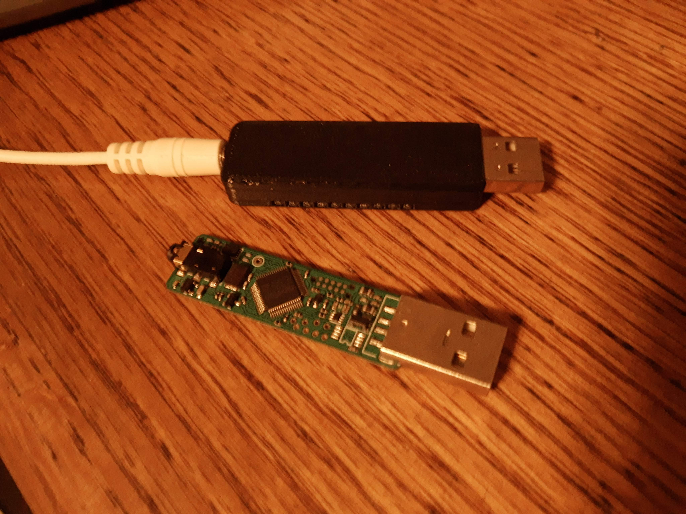

Photoplysmography (PPG) Sensor
This board was designed to measure PPG signals and calculate SPO2, heart rate, and blood pressure trending (BPT). I designed all parts of this including the enclosure, PCB, firmware, and all the hardware and firmware for the receiver. The BPT calculation and output was one of the major reasons for selecting the MAX30101 sensor and hub. You can communicate with the sensor directly via i2C, or you can put one of their sensor hubs in between to perform the aforementioned calculations. BPT is the only difficult calculation that I believe they are calculating with machine learning. I’ve already mentioned some of my gripes with the hub in my “handheld data acquisition system” listing and won’t repeat what can be read here.
When I first received my PCB from the fabricator, I could perform continuous BPT measurements without having to reset the device. The measurements took about 100ms to update which was fine. The timing issues I discussed previously was compounded when trying to do the BPT calculations which caused a good amount of stutter. Maxim released a decent number of firmware updates for the hub so I figured it would be worthwhile to implement a scheme for updating the firmware on the sensor which could also maybe fix my timing issue. After updating the firmware, I found they did away with the ability to continuously read the BPT value and it was now set up as a one shot which was not clear in the documentation packaged with the firmware. You must perform a calibration procedure for every blood pressure measurement which results in a new point every 20 or 30 seconds and once it outputs the value the SPO2 and pulse values are stopped for a second which was not acceptable for my application. I decided to remove the hub and perform my own calculations.
I considered many different mechanisms of fixing the sensor to the user’s finger but ended up going with a strip of hook and latch. I found a manufacturer that could cut it to my specified shape and even print a logo on it, for a reasonable price. I designed the enclosure so the hook and latch would permanently attach to it so it couldn’t get lost. The lid was a sliding door that locked into place when slid closed. I’ve found sliding doors with a lock tend to provide better results than annular snaps with 3D printed enclosures. The image to the right shows what it looks like attached to my index finger and also gives a sense of scale.
Another problem I needed to address, was ensuring the parasitic capacitance of the cable didn’t exceed the tolerance specified by the i2C standard. Because the device is so small, I wanted a cable that was also somewhat thin so it would have a decent amount of capacitance. I ended up finding a repeater specifically designed for i2C that was a reasonable price and had good availability.
I received a request to put some LEDs in the reciever, so I put 10 on the bottom of the board. I designed the enclosure to have light pipes that I would 3D print with clear PETG to direct the light at 90 degrees on either side of the dongle. Because the device could be unplugged at any time, I implemented a robust means of resetting the device in the hardware. I would indicate that the device was unplugged by turning the LEDs on in sequence to create a kind of looping effect. When the receiver established a connection with the peripheral, I would strobe all the lights green and turn the LEDs off. Another use for the LEDs was to inform the user of the state of the calibration which took a minute or so when I had the sensor hub on board.